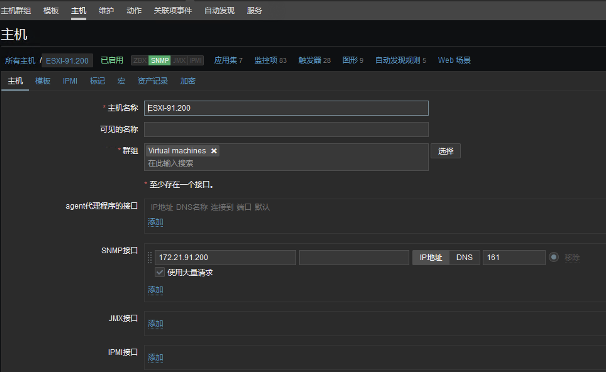
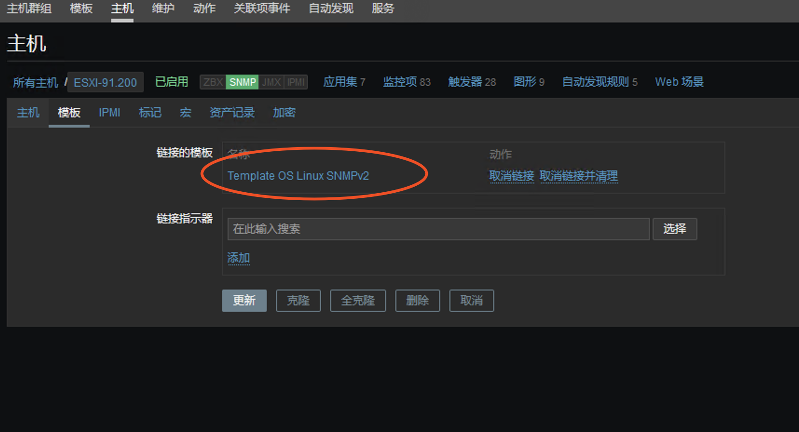
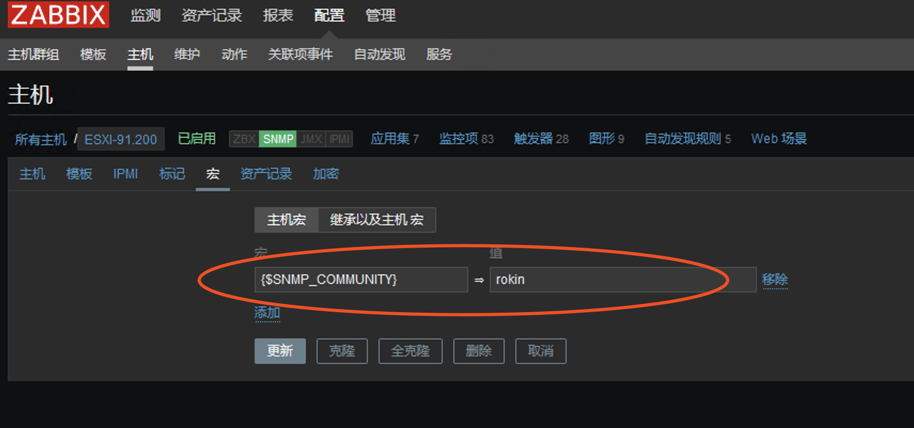
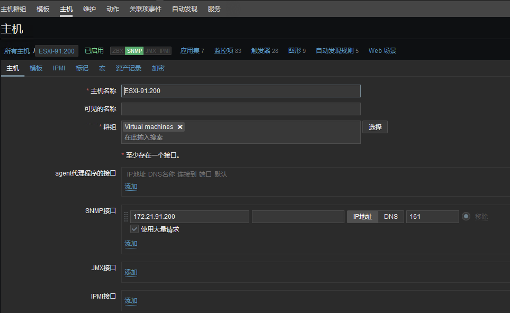
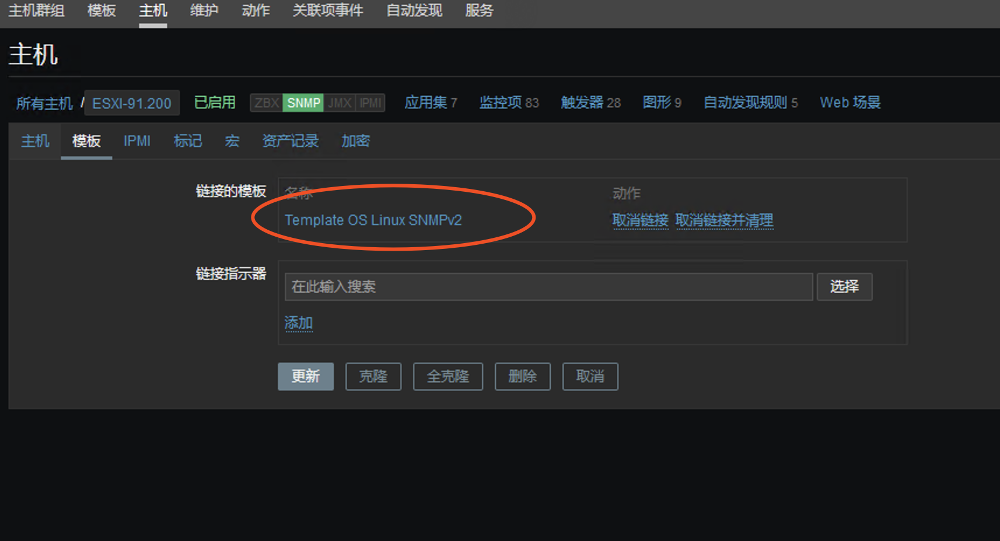
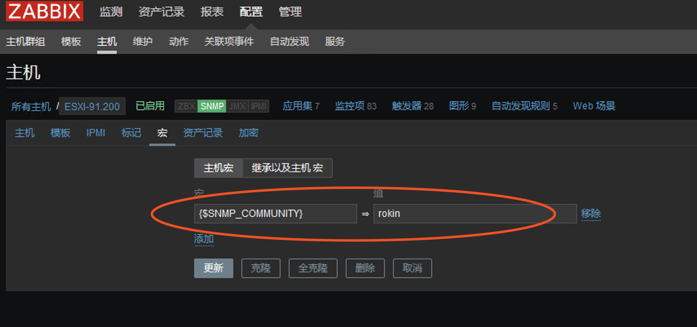

zabbix-监控-ESXI-SNMP
参考:https://www.cnblogs.com/itfat/p/8044409.html
开启ESXI的SSH(通过ssh登录esxi后台)
esxcli system snmp set --communities publicpublic 为团体名
esxcli system snmp set --enable true
开启snmp服务
zabbix创建主机
按下图配置



参考:https://www.cnblogs.com/itfat/p/8044409.html
开启ESXI的SSH(通过ssh登录esxi后台)
esxcli system snmp set --communities public
public 为团体名
esxcli system snmp set --enable true
开启snmp服务
zabbix创建主机
按下图配置


